◆舉辦期間◆
2021年8月1日(日) 18:00～8月15日(日) 11:59
◆有關從者真名的注意◆
在2018年12月31日(二) 23:00以後新配信的主線故事及期間限定活動、一部份關卡、宣傳活動及召喚中，會顯示隱藏真名的對象從者真名。
※2018年12月31日(一) 22:59前已經配信的主線故事、復刻活動、一部份關卡中不在此限。
※本頁面皆為開發中圖片。會有與實際圖片相異的情況。
自2021年8月1日(日) 18:00，向通過「特異點F 炎上汙染都市 冬木」的御主對象，可從全32位★5(SSR)從者之中選擇1位召喚的「特別召喚」登場。
■所謂特別召喚
在達文西工房的「活動道具交換」永久追加，對象為剛開始遊戲御主的召喚。
滿足使用條件後，可從對象全32位★5(SSR)從者之中選擇1位召喚。
※「特別召喚」的使用只限1次，使用時請注意。 ※已經通過「特異點F 炎上汙染都市 冬木」的御主也可使用1次「特別召喚」。
◆開放時間◆
2021年8月1日(日) 18:00～
※因永久追加而沒有期限。
◆達文西工房中的交換條件◆
通過「特異點F 炎上汙染都市 冬木」的御主對象
◆從者的交換方法◆
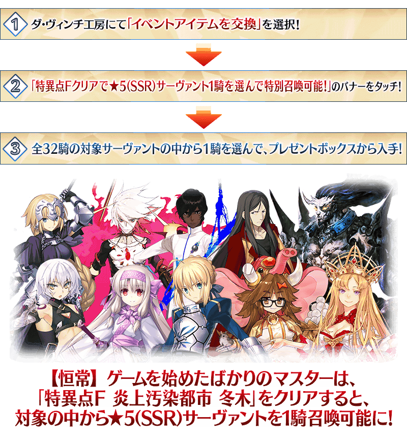
◆有關從者的注意◆
※對象從者不包含期間限定從者。
※尼古拉・特斯拉、阿爾托莉亞・潘德拉剛(Lancer)、魁札爾・科亞特爾(Rider)、女王梅芙(Rider)、李書文(Assassin)、庫・夫林〔Alter〕、志度內就算通過章節前也能交換。
※無記名靈基的獲得條件(同個★5(SSR)從者累計入手6位以上)只計算透過聖晶石召喚入手的情況。請注意「特別召喚」入手中同個★5(SSR)從者的情況不會計算。
※關於隱藏真名尚未判明的從者，透過主線關卡的進行會讓從者及一部份寶具的名稱變化。
※本宣傳活動中，會記載隱藏真名的對象從者真名。
◆交換對象從者◆
| 職階 | 從者名 | |
|---|---|---|

|
Saber | 阿提拉 |
| 阿爾托莉亞・潘德拉剛 | ||
| 莫德雷德 | ||

|
Archer | 阿周那 |
| 俄里翁 | ||
| 拿破崙 | ||
| 故事召喚從者 尼古拉・特斯拉 | ||

|
Lancer | 故事召喚從者 阿爾托莉亞・潘德拉剛 |
| 恩奇杜 | ||
| 迦爾納 | ||
| 布拉達曼特 | ||

|
Rider | 阿基里斯 |
| 歐羅巴 | ||
| 奧茲曼迪亞斯 | ||
| 故事召喚從者 魁札爾・科亞特爾 | ||
| 故事召喚從者 女王梅芙 | ||
| 弗朗西斯・德雷克 | ||

|
Caster | 安娜塔西亞 |
| 玄奘三藏 | ||
| 雪赫拉莎德(不夜城的Caster) | ||
| 諸葛孔明〔艾梅洛Ⅱ世〕 | ||
| 玉藻前 | ||

|
Assassin | 刑部姬 |
| 開膛手傑克 | ||
| 故事召喚從者 李書文 | ||

|
Berserker | 弗拉德三世 |
| 故事召喚從者 庫・夫林〔Alter〕 | ||
| 項羽 | ||
| 南丁格爾 | ||

|
Ruler | 貞德 |

|
Alterego | 故事召喚從者 志度內 |

|
MoonCancer | 吉娜可＝加里吉利(偉大石像神) |
※「★5(SSR)吉娜可＝加里吉利(偉大石像神)」是「★5(SSR)偉大石像神」靈基再臨到第2階段的話名稱會變成「★5(SSR)吉娜可＝加里吉利」。
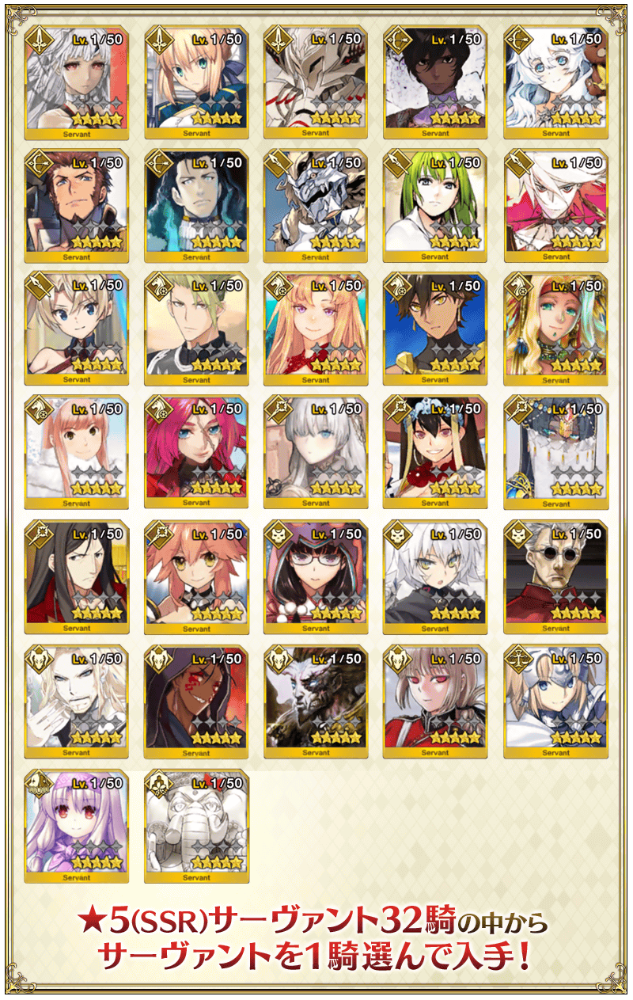
為了記念「Fate/Grand Order」6周年，期間限定從者「★5(SSR)光之高揚斯卡婭」新登場！
「★5(SSR)光之高揚斯卡婭」在舉辦中的「6周年記念Pick Up召喚(每日交替)」Pick Up中！
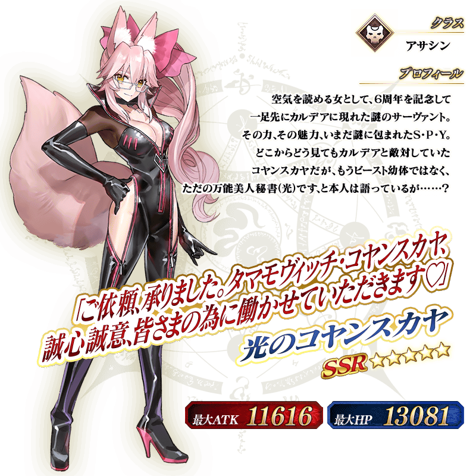

◆「6周年記念Pick Up召喚(每日交替)」期間◆
2021年8月1日(日) 18:00～8月15日(日) 11:59
為了記念「Fate/Grand Order」6周年，新登場的期間限定從者「★5(SSR)光之高揚斯卡婭」與3種期間限定概念禮裝Pick Up！
並且從與第2部 第1章～第5章 奧林帕斯有關的從者之中22位分職階別以每日交替Pick Up！
今後追加到故事召喚的「★5(SSR)魔道元帥」也先行登場！
光之高揚斯卡婭的體驗關卡以期間限定舉辦！
以期間限定舉辦光之高揚斯卡婭的體驗關卡！
可迎接「★5(SSR)光之高揚斯卡婭」做為支援成員，挑戰期間限定的關卡！
別錯過體驗從者技能與寶具的機會！
※請注意在光之高揚斯卡婭的體驗關卡沒有文字冒險部份。
◆光之高揚斯卡婭體驗關卡舉辦期間◆
2021年8月1日(日) 18:00～8月15日(日) 11:59
◆開放條件◆
滿足以下條件的御主才能參加
・通過「特異點F 炎上汙染都市 冬木」
◆關卡通過報酬◆
呼符 1張
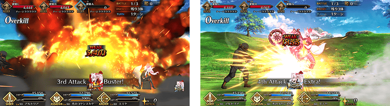
贈送在從2021年7月27日(二)到8月1日(日)6天內放送「Fate/Grand Order Fes. 2021 6th Anniversary」進行的放送節目連動宣傳活動的報酬！
◆領取期間◆
2021年8月2日(一) 3:00～8月9日(一) 2:59
上述期間中，在初次登入至「Fate/Grand Order」的時間點，贈予至禮物箱。
※期間內未登入的話無法領取。
※禮物只能領取1次。
◆贈送內容◆
聖晶石 156個
(6萬RT達成報酬12個×6次=72個、挑戰達成報酬84個)
◆贈送對象◆
2021年8月2日(一) 2:59前通過「特異點F 炎上汙染都市 冬木」的御主對象
※上述時間前，在管理室(ターミナル)畫面的關卡橫幅必須要有「CLEAR」的文字顯示。
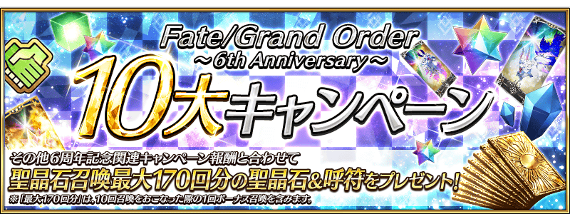

為了記念6周年，實施特別登入獎勵。
在下述期間中7天內連續登入，贈送呼符10張等的豪華報酬！
並且，在期間中登入5次(1天算1次)的話，贈送共英靈結晶・流星之芙芙ALL★4(HP)1張、英靈結晶・日輪之芙芙ALL★4(ATK)1張、迦勒底的夢火1個、稀有稜鏡1個、聖杯1個！
◆舉辦期間◆
2021年8月2日(一) 3:00～8月12日(四) 2:59
◆贈送對象◆
2021年8月11日(三) 2:59前通過「特異點F 炎上汙染都市 冬木」的御主對象
※上述時間前，在管理室(ターミナル)畫面的關卡橫幅必須要有「CLEAR」的文字顯示。
【特別連續登入獎勵】
| 連續登入天數 | 贈送內容 | |
|---|---|---|
| 第1天 |

|
1,000萬QP |

|
黃金果實 1個 | |
| 第2天 |

|
友情點數 10萬pt |
|
|
黃金果實 1個 | |
| 第3天 |

|
睿智的業火ALL★5(SSR) 10張 |
|
|
黃金果實 1個 | |
| 第4天 |

|
魔力稜鏡 100個 |
|
|
黃金果實 1個 | |
| 第5天 |

|
英靈結晶・太陽之芙芙ALL★3(ATK) 10張 |
|
|
黃金果實 1個 | |
| 第6天 |

|
英靈結晶・星之芙芙ALL★3(HP) 10張 |
|
|
黃金果實 1個 | |
| 第7天 |

|
呼符 10張 |
|
|
黃金果實 1個 | |
※登入獎勵會在每天3:00配發 ※連連續登入天數中斷後，無法領取之後的禮物。 ※最多能領取7次，但根據成為贈送對象的時間點，可能無法到此上限。
【特別次數登入獎勵】
| 登入次數 | 贈送內容 | |
|---|---|---|
| 第1次 |

|
英靈結晶・流星之芙芙ALL★4(HP) 1張 |
| 第2次 |

|
英靈結晶・日輪之芙芙ALL★4(ATK) 1張 |
| 第3次 |

|
迦勒底的夢火 1個 |
| 第4次 |

|
稀有稜鏡 1個 |
| 第5次 |

|
聖杯 1個 |
※登入獎勵會在每天3:00配發。 ※合計5天內能領取，但根據成為贈送對象的時間點，可能無法到此上限。

◆「6周年記念福袋召喚(登場年別×職階分類別)」期間◆
2021年8月1日(日) 18:00～8月15日(日) 11:59
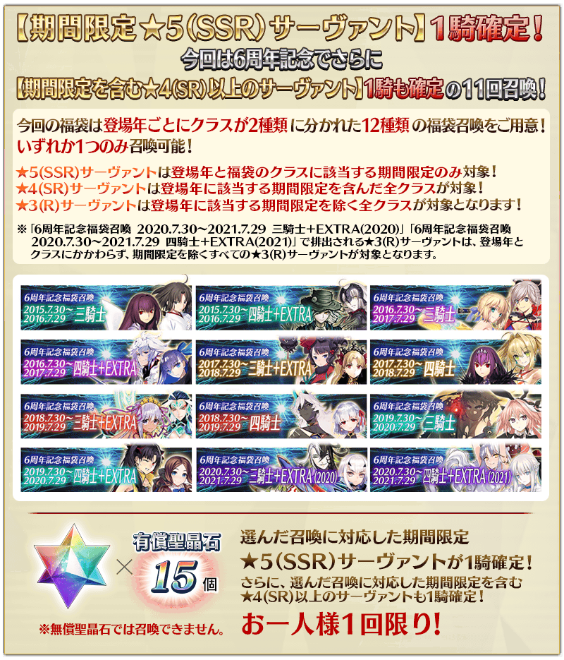
1天1次限定，特定Pick Up聖晶石召喚的「1次召喚」變得可使用有償聖晶石1個！
可使用比平常更實惠的「1次召喚」召喚！
◆翻新實施時間◆
2021年8月1日(日) 18:00～
※1天1次限定的「1次召喚」對象不包含故事召喚。 ※1天1次限定的「1次召喚」，每天3:00重置。 ※關於每種期間限定召喚能各進行1次「1次召喚」。 ※請注意就算進行1天1次限定的「1次召喚」，也不包含在1次獎勵的計算。
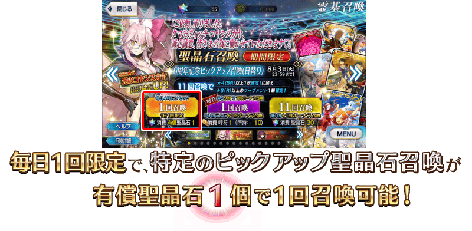
「從者硬幣」功能做為新的從者成長要素實裝！
在透過召喚入手從者時和絆Lv.提升時可獲得「從者硬幣」。
向對象從者使用獲得的「從者硬幣」的話，進行聖杯轉臨成長至Lv.100的從者Lv.上限，能開放追加最多至Lv.120！並且，也能進行在戰鬥中自動發揮效果的附加技能解放。
※在從者的Lv.100以上的Lv.上限開放，使用從者硬幣、聖杯、QP。
活用「從者硬幣」，讓中意的從者更加強化吧！
◆功能實裝時間◆
2021年8月1日(日) 18:00～
◆關於在本功能實裝前入手的★5(SSR)、★4(SR)從者及絆Lv.份的從者硬幣◆
※在本功能實裝前入手的★5(SSR)、★4(SR)從者的從者硬幣，會對應召喚次數的枚數送到禮物箱內。
就算靈基變還(販賣)的情況也會是對象。
※在本功能實裝前已經提高絆Lv.從者的從者硬幣，會對應絆Lv.的枚數送到禮物箱內。
※透過無記名靈基和宣傳活動靠從者交換讓從者加入的情況也可獲得從者硬幣。
※送到禮物箱內的從者硬幣沒有領取期限。
※本次送到禮物箱的「從者硬幣」不會計算在禮物的最大持有數。
就算禮物箱內的禮物到達最大持有數(400件)的情況領取，超過最大持有數也不會刪除。
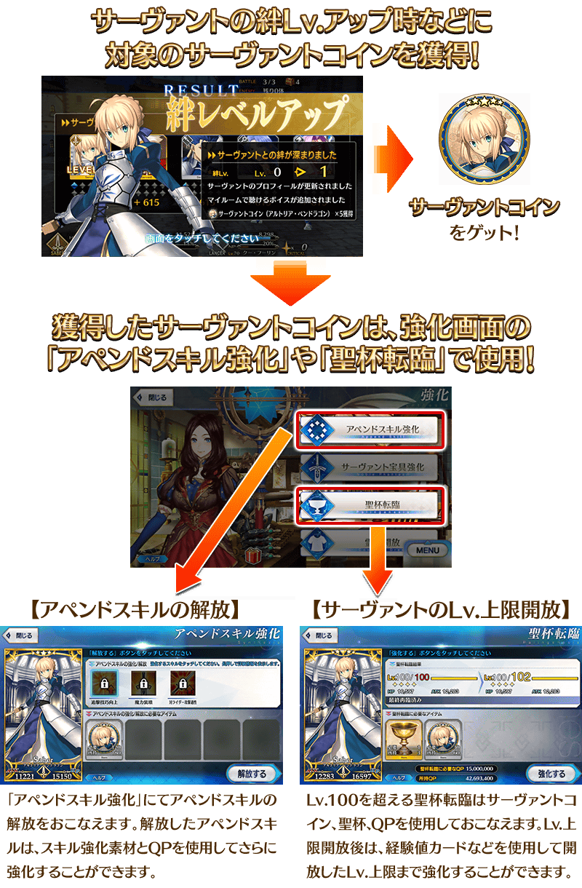
從者硬幣獲得方法
從者硬幣可靠以下的方法獲得。 ・透過召喚入手從者 ・絆Lv.提升 ・期間限定活動和宣傳活動等
另外，各方法可獲得的從者硬幣枚數如下。
※透過期間限定活動和宣傳活動等的獲得量，各期間限定活動和宣傳活動有所差異。
【透過召喚入手從者時的獲得量】
| 召喚的種類 | 對象從者 | 稀有度 | 獲得枚數 |
|---|---|---|---|
| 聖晶石召喚 | 期間限定從者 | ★★★★★ | 90枚 |
| ★★★★ | 50枚 | ||
| ★★★ | 30枚 | ||
| 故事召喚 從者 |
★★★★★ | 90枚 | |
| ★★★★ | 50枚 | ||
| ★★★ | 30枚 | ||
| 常駐從者 | ★★★★★ | 90枚 | |
| ★★★★ | 30枚 | ||
| ★★★ | 15枚 | ||
| 友情點數召喚 | 常駐從者 | ★★★★ | 30枚 |
| ★★★ | 15枚 | ||
| ★★ | 6枚 | ||
| ★ | 2枚 |
【絆Lv.提升時的獲得量】
| 絆Lv. | 獲得枚數 |
|---|---|
| Lv.1～Lv.6 | 各Lv.5枚 |
| Lv.7～Lv.9 | 各Lv.10枚 |
| Lv.10～Lv.15 | 各Lv.20枚 |
※只限瑪琇・基利艾拉特，在絆Lv.提升時可獲得的從者硬幣枚數與其他從者不同。
◆有關從者硬幣獲得的注意◆
※透過期間限定活動和Main Interlude、於達文西工房的「稀有稜鏡交換」關卡開放權所開放的關卡報酬而加入的限定從者，無法獲得從者硬幣。
※關於活動限定從者的從者硬幣，今後預定會實裝別的獲得方法。
※持有的從者硬幣，可於個人空間(マイルーム)的「持有從者硬幣一覧」確認。
從者硬幣的利用方法
收集從者硬幣與道具和QP使用後，可進行以下的強化。
【透過從者硬幣強化】
| 內容 | 使用道具 |
|---|---|
| 從者的Lv.100以上的Lv.上限開放 ※每次進行提高LV.上限2(最大Lv.120) |
從者硬幣 30枚 聖杯 1個 QP |
| 附加技能的解放 ※附加技能最多能解放至3個 | 從者硬幣 120張 |
◆有關從者硬幣使用的注意◆
※「從者的Lv.100以上的Lv.上限開放」使用從者硬幣、聖杯、QP後，成長至Lv.100的從者Lv.上限可再提高至最大Lv.120。
※從者的Lv.上限在Lv.102以上的話，卡面邊框會變化。另外，從者強化至Lv.120的話，在卡面內顯示的聖杯會變化。
※無法對暫時加入狀態的從者進行「附加技能的解放」。
※解放的附加技能，使用技能強化素材與QP後可將其強化。
※解放・強化的附加技能，可於從者詳細畫面和戰鬥中的從者數值確認。
※有關目前附加技能的顯示確認有問題，正在進行調査・對應。
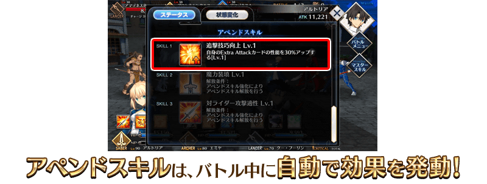
在入手經驗值卡的「蒐集種火」與入手QP手的「打開寶物庫之門」的2個每日關卡，追加上位關卡難易度「極級」！
「蒐集種火(極級)」中，會出現對應每天開放職階的「黎明的炎腕」，撃破後會掉落高效果的經驗值卡。
「打開寶物庫之門(極級)」中，會出現「尊貴的黃金像」做為敵人，撃破後會掉落大量的QP。
「極級」中有效率地收集「種火」和「QP」，推進從者的育成吧！
◆翻新實施時間◆
2021年8月1日(日) 18:00～
※難易度超級以下的「蒐集種火」關卡中，進行出現敵人職階傾向的調整。伴隨此調整而變更一部份「蒐集種火」的關卡名。 ※「打開寶物庫之門」的關卡，廢除每天關卡的交替，「打開寶物庫之門」會合併成1個關卡。
【追加關卡一覧】
| 關卡名 | 追加出現敵人 |
|---|---|
| 週一 蒐集種火<殺・槍篇>極級 | 黎明的炎腕(Assassin・Lancer・Berserker) |
| 週二 蒐集種火<騎・劍篇>極級 | 黎明的炎腕(Rider・Saber・Berserker) |
| 週三 蒐集種火<術・弓篇>極級 | 黎明的炎腕(Caster・Archer・Berserker) |
| 週四 蒐集種火<槍・殺篇>極級 | 黎明的炎腕(Lancer・Assassin・Berserker) |
| 週五 蒐集種火<劍・騎篇>極級 | 黎明的炎腕(Saber・Rider・Berserker) |
| 週六 蒐集種火<弓・術篇>極級 | 黎明的炎腕(Archer・Caster・Berserker) |
| 週日 蒐集種火<隨機篇>極級 | 黎明的炎腕(Saber・Archer・Lancer・Rider・Caster・Assassin・Berserker) |
| 打開寶物庫之門 極級 | 尊貴的黃金像 |
【極級的推薦Lv.與消耗AP】
| 難易度 | 推薦Lv | 消耗AP |
|---|---|---|
| 極級 | 60 | 40 |
做為永久施策，主線關卡和自由關卡中敵人隨機掉落的「種火的稀有度」與「QP的獲得量」提升！並且，關於其他道具也進行全體性調整使掉落機率略微提升。
※關於非隨機而必掉落固定戰利品的敵人為對象外。
◆翻新實施時間◆
2021年8月1日(日) 18:00～
第2部 第5.5章為止的主線關卡的消耗AP1/2！
以期間限定舉辦的主線關卡從第2部 第5章 奧林帕斯到第5.5章的消耗AP1/2宣傳活動，變成永久舉辦。
◆翻新實施時間◆
2021年8月15日(日) 12:00～
向所有的御主對象，「從者」「概念禮裝」的持有欄位與保管欄位以追加擴張100欄位，並且，「指令紋章」的持有欄位以追加擴張50欄位。
另外，在達文西工房內的「從者保管欄位增加」「概念禮裝保管欄位增加」，可消耗魔力稜鏡追加的保管欄位上限數，再追加20次份(合計100欄位份)。
◆翻新實施時間◆
2021年8月1日(日) 18:00～
【持有欄位的擴張數】
| 對象持有欄位 | 擴張數 |
|---|---|
| 從者持有欄位 | 500→600(追加100欄位) |
| 概念禮裝持有欄位 | 500→600(追加100欄位) |
| 指令紋章持有欄位 | 300→350(追加50欄位) |
【保管欄位的擴張數】
| 對象保管欄位 | 剩餘次數 | 最大擴張時 |
|---|---|---|
| 從者保管欄位增加 | 140→160(追加20次份) | 800→900(追加100欄位) |
| 概念禮裝保管欄位增加 | 140→160(追加20次份) | 800→900(追加100欄位) |
※請注意在從者保管欄位的擴張及概念禮裝保管欄位的擴張，關於1次的擴張需要魔力稜鏡50個。
QP的持有上限擴大成約2倍！
向所有的御主對象，「QP的持有上限」擴大成約2倍的20億QP！
變得可持有更多QP，更容易確保對從者的育成必須的QP！
◆翻新實施時間◆
2021年8月1日(日) 18:00～
【QP的持有上限】
| 擴張前 | 擴張後 |
|---|---|
| 9億9999萬9999QP | 20億QP |

在御主任務(Extra任務)，追加從主線關卡第2部 第5章 奧林帕斯到第2部 第5.5章的通過報酬及可靠「強化關卡」「幕間物語」「主線故事地圖的自由關卡」各自通過次數達成的新任務。
通過所有任務的話，可得到最多120個的聖晶石！
※就算已經通過從主線關卡第2部 第5章 奧林帕斯到第2部 第5.5章、「主線故事地圖的自由關卡」「強化關卡」「幕間物語」的玩家，也同樣能領取通過報酬。
◆翻新實施時間◆
2021年8月1日(日) 18:00～
◆通過報酬的領取方式◆
在御主任務畫面顯示的「Extra(エクストラ)」的項目內，會顯示關聯的任務，請點擊已通過的任務領取達成報酬。
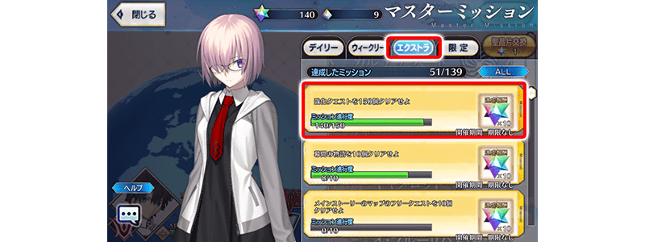
◆追加Extra任務◆
| 任務名稱 | 任務達成報酬 | |
|---|---|---|
| 通過『Lostbelt No.5 星間都市山脈 奧林帕斯』 |

|
聖晶石 10個 |
| 通過『地獄界曼荼羅 平安京』 |
|
聖晶石 10個 |
| 通過150個強化關卡 |
|
聖晶石 10個 |
| 通過160個強化關卡 |
|
聖晶石 10個 |
| 通過170個強化關卡 |
|
聖晶石 10個 |
| 通過180個強化關卡 |
|
聖晶石 10個 |
| 通過190個強化關卡 |
|
聖晶石 10個 |
| 通過強化關卡200個 |
|
聖晶石 10個 |
| 通過230個幕間物語 |
|
聖晶石 10個 |
| 通過240個幕間物語 |
|
聖晶石 10個 |
| 通過210個主線故事地圖的自由關卡 |
|
聖晶石 10個 |
| 通過220個主線故事地圖的自由關卡 |
|
聖晶石 10個 |
※在「通過強化關卡200個」，也包含「從者強化關卡 第14彈～6th Anniversary～特別篇」中日後開放的強化關卡。 ※在「通過220個主線故事地圖的自由關卡」，包含後日開放的第2部 6章自由關卡。
每日任務6周年記念版以期間限定舉辦！
下述的期間中，舉辦「每日任務6周年記念版」。
「每日任務6周年記念版」中，可靠「每日任務」報酬獲得的魔力稜鏡數變成2倍！
活用同時舉辦中的全每日關卡的消耗AP1/2＆「蒐集種火」「修練場」關卡全開放，達成每日任務吧！
◆舉辦期間◆
2021年8月2日(一) 23:00～8月15日(日) 22:59
◆每日任務6周年記念版◆
| 任務名稱 | 任務達成報酬 | |
|---|---|---|
|
【6周年記念 報酬2倍！】 通過1次關卡 |
|
魔力稜鏡 20個 |
|
【6周年記念 報酬2倍！】 通過2次關卡 |
|
魔力稜鏡 20個 |
|
【6周年記念 報酬2倍！】 通過3次關卡 |
|
魔力稜鏡 20個 |
※「每日任務」在每天23:00更新。 ※所有關卡為計算的對象。 ※每日任務的報酬會在任務達成時自動領取。不需要於任務清單「領取」。
做為幕間物語的初次通過報酬所得到的聖晶石數變成2倍！
僅列入本次追加的報酬，就能入手最多138個的聖晶石！
※已經通過的「幕間物語」的追加份通過報酬，會送到禮物箱內。
◆翻新實施時間◆
2021年8月1日(日) 18:00～
在迦勒底之門內每天輪流出現的關卡以期間限定所有的每日關卡AP消耗量變成1/2！(就算在戰鬥中撤退的情況，也會是同様的消耗量)
並且，在迦勒底之門內以期間限定開放全種類迦勒底之門內每日出現的關卡「蒐集種火」與「修練場」。
◆舉辦期間◆
2021年8月1日(日) 18:00～8月15日(日) 11:59
※難易度超級以下的「蒐集種火」關卡中，進行出現敵人職階傾向的調整。伴隨此調整而變更一部份「蒐集種火」的關卡名。
◆對象關卡◆
・蒐集種火
【6周年記念】週一 蒐集種火<殺・槍篇>初級、中級、上級、超級、極級
【6周年記念】週二 蒐集種火<騎・劍篇>初級、中級、上級、超級、極級
【6周年記念】週三 蒐集種火<術・弓篇>初級、中級、上級、超級、極級
【6周年記念】週四 蒐集種火<槍・殺篇>初級、中級、上級、超級、極級
【6周年記念】週五 蒐集種火<劍・騎篇>初級、中級、上級、超級、極級
【6周年記念】週六 蒐集種火<弓・術篇>初級、中級、上級、超級、極級
【6周年記念】週日 蒐集種火<隨機篇>初級、中級、上級、超級、極級
・修練場
【6周年記念】週一 弓之修練場 初級、中級、上級、超級
【6周年記念】週二 槍之修練場 初級、中級、上級、超級
【6周年記念】週三 狂之修練場 初級、中級、上級、超級
【6周年記念】週四 騎之修練場 初級、中級、上級、超級
【6周年記念】週五 術之修練場 初級、中級、上級、超級
【6周年記念】週六 殺之修練場 初級、中級、上級、超級
【6周年記念】週日 劍之修練場 初級、中級、上級、超級
・打開寶物庫之門
打開寶物庫之門 初級、中級、上級、超級、極級
※請注意由於以期間限定出現的「蒐集種火」及「修練場」與平常每天輪流出現的「蒐集種火」及「修練場」關卡不同，不會繼承「關卡情報」。
※每日關卡的詳細如下。
【打開寶物庫之門、蒐集種火 關卡的難易度等】
| 難易度 | 推薦Lv | 消耗AP |
|---|---|---|
| 初級 | 5 | 10→5 |
| 中級 | 10 | 20→10 |
| 上級 | 25 | 30→15 |
| 超級 | 40 | 40→20 |
| 極級 | 60 | 40→20 |
※「極級」為在每日關卡「蒐集種火」與「打開寶物庫之門」新追加的難易度。
【修練場 關卡的難易度等】
| 難易度 | 推薦Lv | 消耗AP |
|---|---|---|
| 初級 | 10 | 10→5 |
| 中級 | 25 | 20→10 |
| 上級 | 40 | 30→15 |
| 超級 | 60 | 40→20 |
【曜日別關卡一覧】
| 星期 | 關卡名 | 做為戰利品可獲得的 主要道具 |
攻略推薦 職階 |
|---|---|---|---|
| 一 | 打開寶物庫之門 AP1/2
|
QP | |
| 【6周年記念】週一 弓之修練場 AP1/2
|
Archer的靈基再臨用道具、Archer的技能強化素材道具 | |
|
| 【6周年記念】週一 蒐集種火 <殺・槍篇> AP1/2
|
Assassin、Lancer、Berserker的經驗值卡 | |
|
| 二 | 打開寶物庫之門 AP1/2
|
QP | |
| 【6周年記念】週二 槍之修練場 AP1/2
|
Lancer的靈基再臨用道具、Lancer的技能強化素材道具 | |
|
| 【6周年記念】週二 蒐集種火 <騎・劍篇> AP1/2
|
Rider、Saber、Berserker的經驗值卡 | |
|
| 三 | 打開寶物庫之門 AP1/2
|
QP | |
| 【6周年記念】週三 狂之修練場 AP1/2
|
Berserker的靈基再臨用道具、Berserker的技能強化素材道具 | ALL | |
| 【6周年記念】週三 蒐集種火 <術・弓篇> AP1/2
|
Caster、Archer、Berserker的經驗值卡 | |
|
| 四 | 打開寶物庫之門 AP1/2
|
QP | |
| 【6周年記念】週四 騎之修練場 AP1/2
|
Rider的靈基再臨用道具、Rider的技能強化素材道具 | |
|
| 【6周年記念】週四 蒐集種火 <槍・殺篇> AP1/2
|
Lancer、Assassin、Berserker的經驗值卡 | |
|
| 五 | 打開寶物庫之門 AP1/2
|
QP | |
| 【6周年記念】週五 術之修練場 AP1/2
|
Caster的靈基再臨用道具、Caster的技能強化素材道具 | |
|
| 【6周年記念】週五 蒐集種火 <劍・騎篇> AP1/2
|
Saber、Rider、Berserker的經驗值卡 | |
|
| 六 | 打開寶物庫之門 AP1/2
|
QP | |
| 【6周年記念】週六 殺之修練場 AP1/2
|
Assassin的靈基再臨用道具、Assassin的技能強化素材道具 | |
|
| 【6周年記念】週六 蒐集種火 <弓・術篇> AP1/2
|
Archer、Caster、Berserker的經驗值卡 | |
|
| 日 | 打開寶物庫之門 AP1/2
|
QP | |
| 【6周年記念】週日 劍之修練場 AP1/2
|
Saber的靈基再臨用道具、Saber的技能強化素材道具 | |
|
| 【6周年記念】週日 蒐集種火 <隨機篇> AP1/2
|
Saber、Archer、Lancer、Rider、Caster、Assassin、Berserker的經驗值卡(隨機) | - |
※Berserker在所有每日關卡皆為有效職階。
從者強化＆概念禮裝強化的大成功・極大成功率以期間限定3倍！
下述的期間中，在進行從者及概念禮裝的強化時，大成功(經驗值2倍加成)・極大成功(經驗值3倍加成)發生機率以期間限定變成3倍！
務必藉此機會強化中意的從者和概念禮裝吧！
◆舉辦期間◆
2021年8月1日(日) 18:00～8月15日(日) 11:59
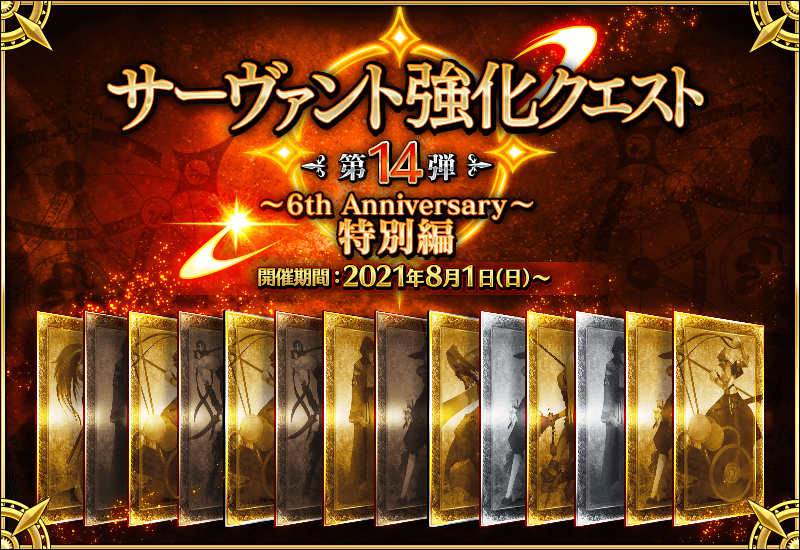
舉辦「從者強化關卡 第14彈～6th Anniversary～特別篇」！
舉辦強化從者能力的特別關卡「從者強化關卡」的第14彈！
本次為了記念「Fate/Grand Order ～6th Anniversary～」的舉辦，合計14位從者的強化關卡永久追加！
對象從者的強化關卡連續7天在迦勒底之門開放。
不僅進行對象從者的強化，也可獲得聖晶石做為關卡通過報酬。
※請注意在從者強化關卡沒有文字冒險部份。
◆追加時間◆
2021年8月1日(日) 18:00～
◆開放條件◆
持有的強化對象從者，必須使其最終再臨。
※未持有對象從者的話，不會出現關卡。
※關卡沒有舉辦期限。
介紹一部份本次的強化關卡對象從者！
介紹自2021年8月1日(日) 18:00追加強化關卡的2位從者。
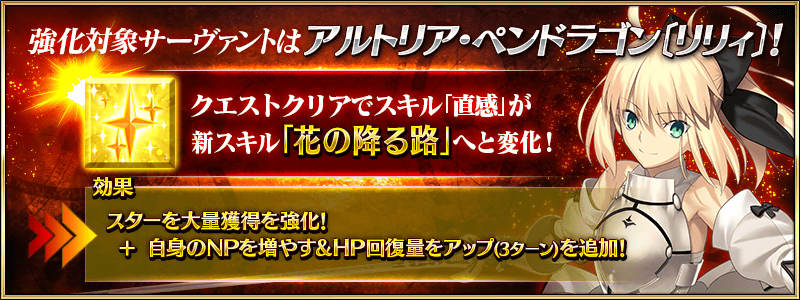 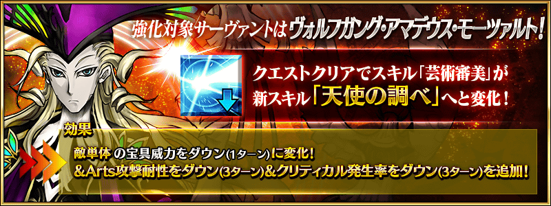

以期間限定在達文西工房的「魔力稜鏡交換」與「稀有稜鏡交換」追加道具。
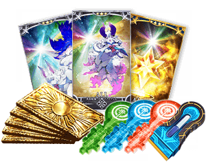
◆道具交換期間◆
2021年8月1日(日) 18:00～8月15日(日) 11:59
◆「魔力稜鏡交換」追加道具◆
| 追加道具 | 能交換 次數 |
1次交換所需的 魔力稜鏡的數 |
|
|---|---|---|---|

|
【期間限定】 Quick紋章開啟器 |
3次 | 50個 |

|
【期間限定】 Arts紋章開啟器 |
3次 | 50個 |

|
【期間限定】 Buster紋章開啟器 |
3次 | 50個 |

|
【期間限定】 紋章移除器 |
3次 | 100個 |
|
|
【期間限定】 呼符 |
10次 | 10個 |

|
【期間限定】 睿智的猛火ALL★4(SR) 10張組 |
10次 | 20個 |
|
|
【期間限定】 英靈結晶・星之芙芙 ALL★3(HP) |
30次 | 5個 |
|
|
【期間限定】 英靈結晶・太陽之芙芙 ALL★3(ATK) |
30次 | 5個 |
◆「稀有稜鏡交換」追加道具◆
| 追加道具 | 能交換 次數 |
1次交換所需的 稀有稜鏡數 |
|
|---|---|---|---|
|
|
【期間限定】 迦勒底的夢火 |
1次 | 3個 |
|
|
【期間限定】 紋章移除器 |
3次 | 1個 |

|
【期間限定】 傳承結晶 |
1次 | 5個 |
|
|
【期間限定】 英靈結晶・流星之芙芙 ALL★4(HP) |
1次 | 3個 |
|
|
【期間限定】 英靈結晶・日輪之芙芙 ALL★4(ATK) |
1次 | 3個 |
|
|
【期間限定】 友情點數 20,000pt |
5次 | 1個 |
在達文西工房的「稀有稜鏡交換」，「指令卡強化」必須的強化素材「獸之足跡」的每月能交換次數，永久地從1次增加到3次！
◆翻新實施時間◆
2021年8月1日(日) 18:00～
◆關於「獸之足跡」的交換◆
| 追加道具 | 能交換 次數 |
1次交換所需的 稀有稜鏡數 |
|
|---|---|---|---|

|
獸之足跡 | 1次→3次 | 1個 |
一部份從者的寶具演出對應到全螢幕。
◆翻新實施時間◆
2021年8月1日(日) 18:00～
| 職階 | 稀有度 | 從者名 |
|---|---|---|
| Saber | ★★★★★ | 亞瑟・潘德拉剛〔Prototype〕 |
| ★★★★★ | 阿爾托莉亞・潘德拉剛 | |
| ★★★★★ | 西格魯德 | |
| ★★★★★ | 狄奧斯庫洛伊 | |
| ★★★★★ | 紅閻魔 | |
| ★★★★ | 阿爾托莉亞・潘德拉剛〔Alter〕 | |
| ★★★★ | 巴御前 | |
| ★★★ | 吉爾・德・雷 | |
| ★★★ | 弗格斯・馬克・羅伊 | |
| Archer | ★★★★★ | 吉爾伽美什 |
| ★★★★★ | 尼古拉・特斯拉 | |
| ★★★★ | 阿塔蘭塔 | |
| ★★★★ | Emiya | |
| ★★★ | 威廉・泰爾 | |
| ★★★ | 子吉爾 | |
| ★★★ | 大衛 | |
| ★★★ | 俵藤太 | |
| ★★★ | 比利小子 | |
| Lancer | ★★★★★ | 恩奇杜 |
| ★★★★★ | 布倫希爾德 | |
| ★★★★ | 阿爾托莉亞・潘德拉剛〔Alter〕 | |
| ★★★★ | 弗拉德三世〔EXTRA〕 | |
| ★★★★ | 帕爾瓦蒂 | |
| ★★★★ | 李書文 | |
| ★★★ | 豹人 | |
| ★★★ | 迪爾姆德・奧德利暗 | |
| ★★★ | 寶藏院胤舜 | |
| ★★★ | 羅慕路斯 | |
| ★★ | 雷奧尼達一世 | |
| Rider | ★★★★★ | 魁札爾・科亞特爾 |
| ★★★★★ | 尼莫 | |
| ★★★★★ | 弗朗西斯・德雷克 | |
| ★★★★ | 阿斯托爾福 | |
| ★★★★ | 阿爾托莉亞・潘德拉剛〔聖誕Alter〕 | |
| ★★★★ | 安妮・伯妮＆瑪莉・瑞德 | |
| ★★★★ | 卡米拉 | |
| ★★★ | 亞歷山大 | |
| ★★★ | 曼迪卡爾多 | |
| Caster | ★★★★★ | 李奧納多・達文西 |
| ★★★★ | 愛麗絲菲爾〔天之衣〕 | |
| ★★★★ | 伊莉莎白・巴托里〔萬聖節〕 | |
| ★★★★ | 海倫娜・布拉瓦茨基 | |
| ★★★★ | 美遊・艾蒂菲爾特 | |
| ★★★ | 阿斯克勒庇俄斯 | |
| ★★★ | 馮・霍恩海姆・帕拉塞爾斯 | |
| ★★★ | 吉爾・德・雷 | |
| ★★★ | 梅菲斯托費勒斯 | |
| ★★ | 威廉・莎士比亞 | |
| ★★ | 陳宮 | |
| ★★ | 漢斯・克里斯蒂安・安徒生 | |
| Assassin | ★★★★★ | 酒吞童子 |
| ★★★★★ | 謎之女主角X | |
| ★★★★ | 牛若丸 | |
| ★★★★ | 燕青(新宿的Assassin) | |
| ★★★★ | 加藤段藏 | |
| ★★★★ | 武則天(不夜城的Assassin) | |
| ★★★ | 風魔小太郎 | |
| ★★ | 夏爾＝亨利・桑松 | |
| Berserker | ★★★★★ | 謎之女主角X〔Alter〕 |
| ★★★★ | 鬼女紅葉 | |
| ★★★★ | 弗蘭肯斯坦 | |
| ★★★★ | 彭忒西勒亞(黃金國的Berserker) | |
| ★★★ | 呂布奉先 | |
| ★★ | 血斧・埃里克 | |
| Ruler | ★★★★★ | 夏洛克・福爾摩斯 |
在召喚畫面進行修改，顯示召喚橫幅更容易了解現在舉辦中的召喚。
點擊畫面下方的召喚橫幅的話，可以確認現在舉辦中的召喚，點擊後可移動至選擇的召喚。
◆翻新實施時間◆
2021年8月1日(日) 18:00～
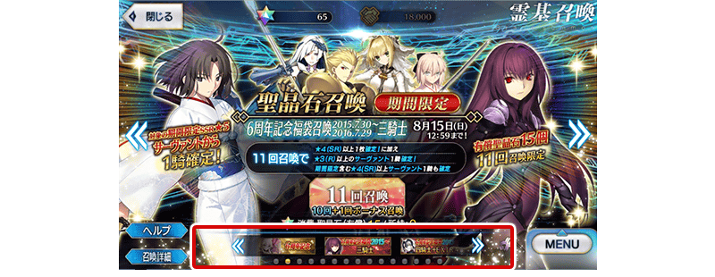
其他還有，
・「Fate/Grand Order Fes. 2021 ～6th Anniversary～」舉辦記念宣傳活動
・6周年記念Pick Up召喚(每日交替)
・6周年記念福袋召喚(登場年別×職階分類別)
以期間限定同時舉辦！
關於詳情，請自下述橫幅確認。
■「Fate/Grand Order Fes. 2021 ～6th Anniversary～」舉辦記念宣傳活動詳細情報

■「6周年記念Pick Up召喚(每日交替)」詳細情報
■「6周年記念福袋召喚(登場年別×職階分類別)」詳細情報